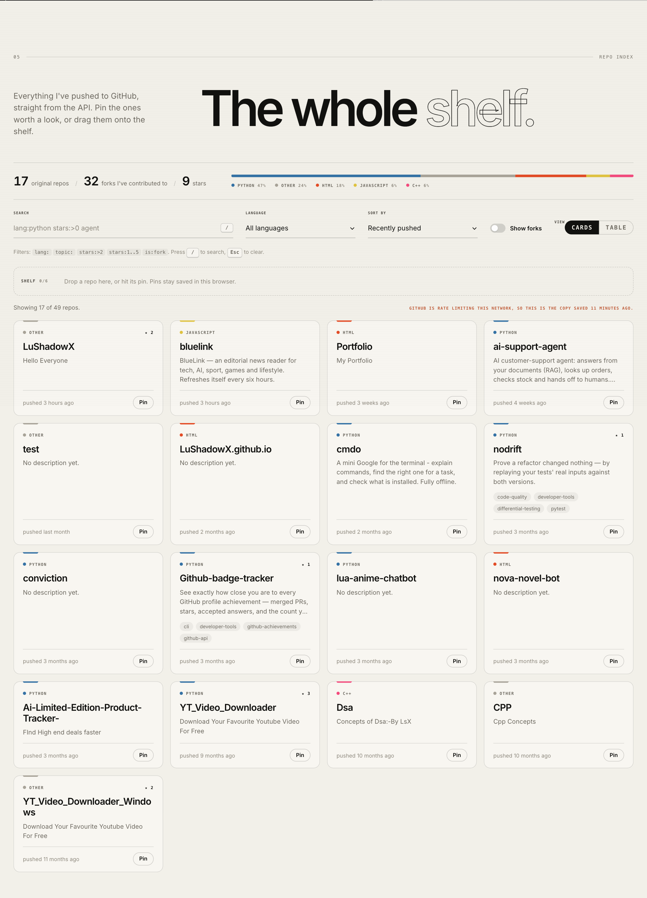
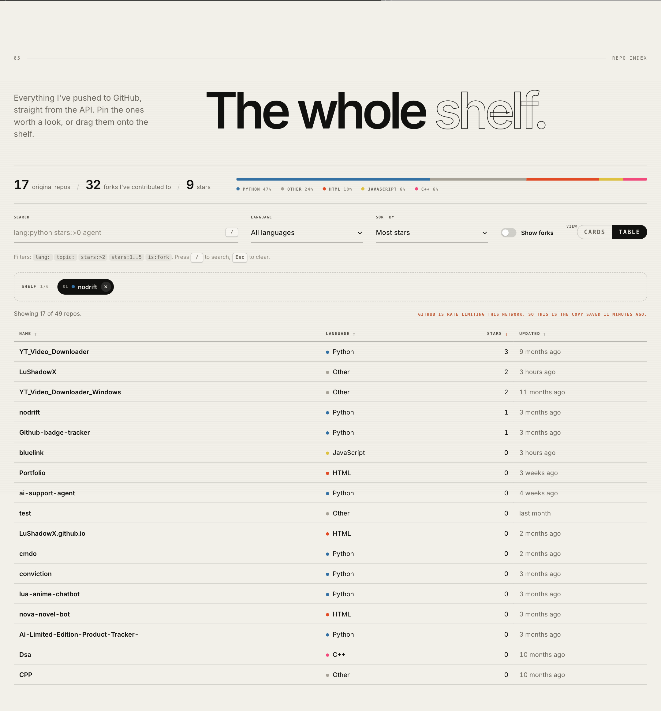
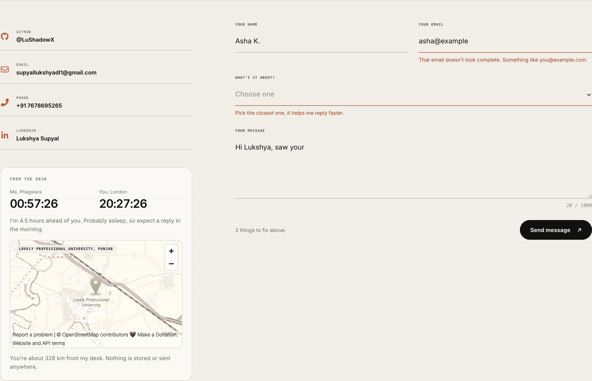
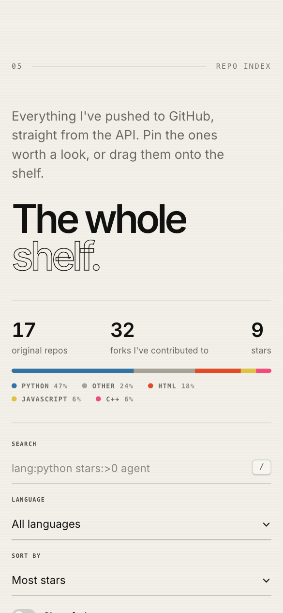
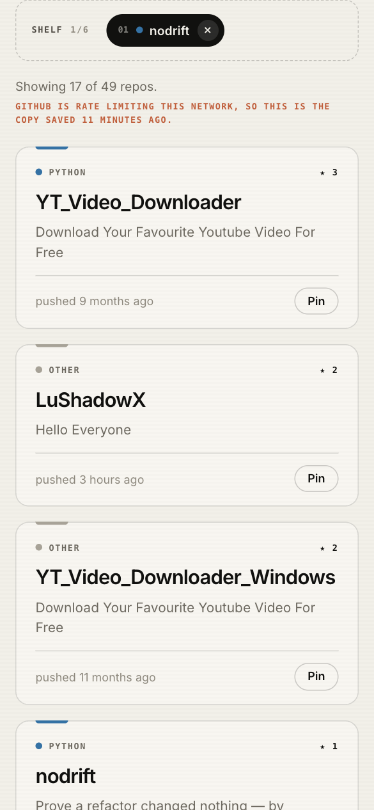

CSE326 · Internet Programming Laboratory · Grade upgradation project
A responsive, accessible personal site built with plain HTML5, CSS3 and JavaScript (ES modules), deployed on GitHub Pages. It now includes a live GitHub repository index, a validated contact form, and browser API features that cover every unit of the CSE326 syllabus.

The portfolio started as a static showcase: intro animation, about section, skills, certificates and projects. For this upgrade I added features that make it a real client-side application. Each one has a reason to exist on a portfolio rather than being a demo bolted on.
lang:python stars:>2, a card view and a sortable table view, and a "shelf" you can drag repositories onto. The shelf is saved in the browser.| Markup | HTML5: semantic sections, forms, table, SVG, video, audio, iframe, template |
|---|---|
| Styling | CSS3: custom properties, Flexbox, Grid, media and container queries, :has(), pseudo-elements, counters, keyframe animations, transitions |
| Scripting | JavaScript (ES2022 modules): no framework, no build step |
| Browser APIs | DOM, Fetch, Web Storage (local + session), Geolocation, Drag and Drop, HTMLMediaElement, IntersectionObserver, Intl, Performance |
| External data | GitHub REST API (/users/LuShadowX/repos), GitHub contributions API, OpenStreetMap embed |
| Tooling | VS Code, Chrome DevTools (Elements, Console, Network, Application, device mode), Git and GitHub, GitHub Pages, GitHub Copilot |
| CO | Where it shows up in the project | Files |
|---|---|---|
| CO1 | Client–server model in practice: the browser requests JSON from GitHub's server and static files from GitHub Pages. HTML5 document structure with full head metadata. Text formatting, lists, links, images, inline SVG (icons, heatmap, language bar generated at runtime), <video> menu previews, <audio> voice note, OpenStreetMap <iframe>. SEO: description, canonical, Open Graph, JSON-LD, sitemap.xml, robots.txt. | index.html, sitemap.xml, robots.txt |
| CO2 | header, nav, main, section, article, aside, footer, figure, time, dl. Skip link, ARIA live regions, aria-invalid / aria-describedby on form errors, aria-sort on the table, aria-pressed on pin buttons, keyboard alternative for drag and drop. Forms with search, email, text, select, checkbox, radio (fieldset/legend), range, textarea. Data table with caption, thead, scope. | index.html |
| CO3 | Design tokens in CSS variables. Grid for the card list and controls, Flexbox for chips and rows. Media queries at 980, 760 and 480 px, plus a container query that turns the table into stacked rows. Pseudo-classes (:hover, :focus-visible, :checked, :invalid, :has(), :empty), pseudo-elements (::before, ::after, ::placeholder, slider thumbs), attribute selectors ([data-fork="true"], [aria-sort], [hidden]), CSS counters, custom-styled form controls, keyframe animations and transitions, prefers-reduced-motion. | assets/css/repo-index.css, assets/css/main.css |
| CO4 | const/let, all primitive types, ?? and ?., template literals, string methods, Math and Intl.NumberFormat, switch and ternaries, normal, arrow and async functions, closures (debounce, cache), arrays (map, filter, reduce, sort, some, every, splice), objects with destructuring and spread, Map and Set. | assets/js/modules/*.js |
| CO5 | DOM selection and creation (<template> cloning, insertRow, DocumentFragment). Click, input, change, keydown, focusout, submit, drag and media events. Regex search qualifiers and form validation, date and time zones with Intl, localStorage and sessionStorage, Fetch + JSON with timeout and fallback, Geolocation, HTML Drag and Drop, audio events driving a custom player. | repo-index.js, contact-form.js, desk.js |
| CO6 | ?debug mode with console.table and performance.mark/measure. Global error and unhandled-rejection listeners. A guard() wrapper so one failing feature can't break the page. try/catch/finally with custom error data. Code split into ES modules, lazy API loading with IntersectionObserver, debounced input, preconnect. Hosted on GitHub Pages from the repository. | app.js, modules/debug.js, modules/storage.js |
| Topic | Implementation |
|---|---|
| Internet and web technologies, client–server | Static site served by GitHub Pages. The browser (client) calls the GitHub REST API (server) and handles HTTP status codes, including 403 rate limiting with a fallback. |
| HTML5 document structure, elements and attributes | <!DOCTYPE html>, lang, charset and viewport meta, data-* attributes used as JS hooks |
| Text formatting, lists, hyperlinks, images | strong, em, small, kbd, code. Ordered list for the pinned shelf, unordered lists for cards and topics. External links with rel="noopener", lazy-loaded images with alt. |
| SVG graphics | Inline SVG icons, the contribution heatmap, and a language-share bar generated from data at runtime |
| Audio, video, iframes | Voice-note <audio> with two <source> formats, menu preview <video>, OpenStreetMap <iframe> with title and loading="lazy" |
| SEO fundamentals, best practices | Meta description, canonical link, Open Graph and Twitter tags, JSON-LD Person schema, sitemap.xml, robots.txt, a single h1 per view, and a noscript message |
| Topic | Implementation |
|---|---|
| Semantic elements, page structure | Each section uses section + aria-labelledby. Cards are article elements with a footer and a time datetime. The desk card is an aside. |
| Accessibility fundamentals and standards (WCAG) | Skip link, focus-visible outlines, live regions, aria-pressed, aria-sort, aria-invalid, labelled controls, keyboard reordering of pins (arrow keys / Delete), reduced-motion support |
| Forms, controls, input types and attributes | search, email, text, select, checkbox, radio group in fieldset, range, textarea. Attributes include required, minlength, maxlength, autocomplete, inputmode, placeholder and novalidate. |
| Form validation basics | HTML constraints are in the markup. JavaScript then takes over for friendlier, accessible messages. |
| Tables and data representation | Repository table with caption, thead/tbody, th scope="col" and scope="row", and sortable headers |
| Responsive content structuring | Content order works on a single column. Controls reflow from 5 columns to 2 to 1. |
| Topic | Implementation |
|---|---|
| Selectors and specificity | Class-based BEM-style names (.repo-card__name), low specificity, state classes (.is-over, .is-dragging) |
| Colours, backgrounds, units, typography | Hex with alpha, gradients and an inline SVG data-URI chevron. rem, px, %, vw and clamp() for fluid type. Inter and monospace pairing, tabular-nums. |
| Box model, positioning | box-sizing, padding and border on cards. Absolute positioning for the drop marker, kbd hint and map caption. Fixed skip link. |
| Flexbox, Grid | Grid: card list (auto-fill + minmax), controls, overview. Flexbox: chips, card footer, status line. |
| Pseudo-classes, pseudo-elements, attribute selectors | :has(), :checked, :invalid, :empty, :focus-visible, :placeholder-shown. ::before/::after for dots, counters and sort arrows. [data-fork="true"], [aria-pressed="true"], [data-label]. |
| Form styling | Custom switch checkbox, segmented radio buttons, custom select arrow, styled range slider, error states |
| CSS variables, responsive design | Tokens per section (--ink, --paper, --accent), per-item variables (--lang, --progress), media queries and a container query |
| Animations and transitions | Loading shimmer, "shelf full" shake keyframes, card lift and underline transitions, switch knob, all disabled under prefers-reduced-motion |
| Topic | Implementation |
|---|---|
| Variables, constants, data types | const by default, let only where values change. Strings, numbers, booleans, null, objects, arrays, Date, Map, Set. |
| Operators and expressions | Nullish coalescing, optional chaining, logical short-circuit, exponent (** in the haversine formula), spread |
| Strings, numbers, booleans | replace, split, includes, padStart, toLowerCase. Math.round, toFixed, Number.isInteger, Intl.NumberFormat('en-IN'). |
| Conditionals | if/else, switch for qualifiers and key handling, ternaries |
| Functions and scope | Function declarations, arrow functions, async functions, default parameters, rest arguments, block scope, module scope |
| Arrays and objects | map/filter/reduce/sort/find/some/every, Object.fromEntries, Object.entries, destructuring, the comparator lookup table SORTS |
| Topic | Implementation |
|---|---|
| Loops, higher-order functions, callbacks | for...of in timeAgo, a filter → filter → filter → sort pipeline, debounce returning a function, a callback-based Geolocation API wrapped in a Promise |
| DOM selection and manipulation | querySelector helpers, <template> cloning, replaceChildren, classList, dataset, setAttribute, insertRow/insertCell |
| Event handling, dynamic content | Event delegation on lists. click, input, change, keydown, focusout, submit, dragstart/dragover/drop/dragend. The / shortcut. |
| JS accessibility practices | Focus restored after re-render, focus moved to the first invalid field, live-region announcements |
| Form validation, regular expressions | /^\p{L}[\p{L}\p{M} .'-]{1,59}$/u for names, an email pattern, link counting, the search-qualifier parser /\b(lang|language|topic|stars|is):("[^"]*"|\S+)/gi, and the time-zone offset parser |
| Date and time | Live clocks with Intl.DateTimeFormat across time zones, Intl.RelativeTimeFormat ("pushed 3 days ago"), a ticker aligned to whole seconds |
| Audio and video events | loadedmetadata, timeupdate, play, pause, ended, error drive the voice-note player. Video playing/waiting drive the menu previews. |
| Web Storage | localStorage: pins, view preferences, contact draft. sessionStorage: 30-minute API cache with TTL. Every access is wrapped because storage can throw. |
| Fetch API and JSON | fetch + await res.json(), res.ok check, AbortController timeout, fallback to a local JSON snapshot |
| Geolocation API | Asked only when the visitor clicks. Every error code is handled. Distance is computed locally with the haversine formula and never stored. |
| Drag and Drop API | Cards drag onto the shelf, chips reorder by drop position, and dragging a chip back to the list unpins it |
| Topic | Implementation |
|---|---|
| Debugging, browser developer tools | ?debug flag: console.table of repos and load timings through the Performance API. Tested with the Network panel (offline / throttled), Application panel (storage) and device mode. |
| Error handling | try/catch/finally, error objects carrying rateLimited, a three-step fallback (cache → API → snapshot), a visible retry button, global error listeners, guard() per feature |
| Interactive UI, client-side application design | A single state object, pure helpers (parseQuery, normalize), and render functions that rebuild the UI from state |
| Code organization | ES modules: app.js entry, feature modules, and shared utils, storage and debug |
| Website performance | API call deferred until the section is near (IntersectionObserver), debounced search, DocumentFragment rendering, preconnect, lazy iframe and images, session cache |
| GitHub repository management, GitHub Pages | Source on GitHub, deployed from the repository root with GitHub Pages. README documents setup, structure and debugging. |
| Improving web apps with GitHub Copilot | Used AI suggestions (GitHub Copilot) to review the code, catch edge cases and refactor. Every change was then tested by hand in DevTools. |
| # | Practical | Covered by | |
|---|---|---|---|
| 1 | Registration form with HTML input controls, CSS selectors, box model, focus styles | Contact form: input types, focus and error states, padded controls | ✓ |
| 2 | Page with text formatting, lists, links, images, SVG, audio, video, iframe | index.html: all present, including the voice note, menu videos and map iframe | ✓ |
| 3 | Responsive page: Flexbox nav, Grid content, media queries | Top bar (Grid/Flex), card grid, breakpoints and container query | ✓ |
| 4 | CSS variables, pseudo-classes and elements, transitions, animations | repo-index.css: tokens, :has(), counters, shimmer, shake, hover lift | ✓ |
| 5 | JS variables, constants, types, operators, control flow | All modules. parseQuery and moodAt are good walk-throughs. | ✓ |
| 6 | Normal and arrow functions, arrays and objects | distanceKm, SORTS, normalize, visibleRepos | ✓ |
| 7 | Click, keyboard and form-change events updating the page | Pin buttons, / and Esc keys, arrow-key reordering, filters | ✓ |
| 8 | Form validation with JS and regular expressions | contact-form.js RULES object | ✓ |
| 9 | Execution context, scope, closures, loops, callbacks, higher-order functions | debounce, cache, wrap, locate, array pipelines | ✓ |
| 10 | HTML5 page with semantic elements and basic CSS layout and typography | The whole site | ✓ |
| Check | Result |
|---|---|
| Live API | Repos load and the source label reads "Live from the GitHub API" |
| Rate limit / offline | A 403 from GitHub falls back to the snapshot and the page says so. With both unavailable, an error message and "try again" button appear. |
| Search | lang:python stars:>0 → 3 results. stars:abc → shown as unreadable with a hint. |
| Pins | Pin by button and by drag, reorder with arrow keys, survive a reload |
| Table | Header click sorts and sets aria-sort. Rows stack on narrow screens. |
| Form | An empty submit shows 4 messages and focuses the first field. The draft is restored after a reload. |
| Desk | London visitor: "I'm 4.5 hours ahead of you". Delhi location: ~328 km from Phagwara. |
| Responsive | 390 px wide: no horizontal scroll, controls in one column |



